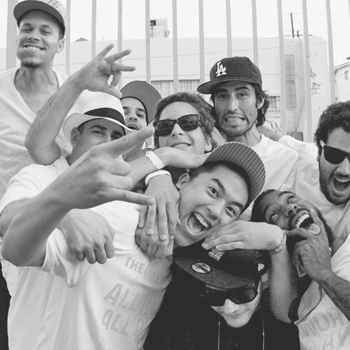
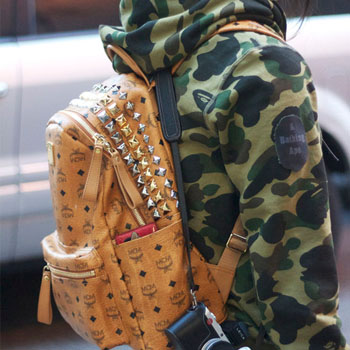

A Bathing Ape (or BAPE) is a Japanese clothing company founded by Nigo in 1993. The company specializes in men's, women's and kids' lifestyle and street wear, running 19 stores in Japan, including Bape Stores, Bape Pirate Stores, Bape Kids Stores, Bapexclusive Aoyama, and Bapexclusive Kyoto. The Kyoto store also includes Bape Gallery, a space used for various events and art shows sponsored by Bape. There are also stores located in Hong Kong, London, New York, Taipei, Paris, Shanghai, Beijing, Seoul and Singapore. The company previously operated Bape Cuts hair salon, Bape Café, and Foot Soldier. Nigo also founded the women's clothing lines "APEE" (currently defunct), and "BAPY" (resurrected in 2010), the female "couture" clothing line.
Nigo, founder and owner, cites his mother and father, who were a nurse and a billboard maker respectively, as major influences in the development of his character. Though because they both worked, he spent a lot of time alone with toys.He also credits DJ/fashion guru Hiroshi Fujiwara as his business model. His nickname means "number two" in Japanese; the MD of Astoarobot, the fashion store, coined the moniker when he noted the physical resemblance to Fujiwara.Nigo cites his early influences as Elvis, The Beatles and hip-hop acts such as Beastie Boys and Run DMC.
After studying fashion editing at college, he worked as an editor and a stylist for Popeye magazine. After borrowing four million yen from an acquaintance, who also let him use his shop, he opened; Nowhere, his first store, on April 1, 1993 in Harajuku, Tokyo. Deciding to start his own brand, he named it after the 1968 film Planet of the Apes. According to Nigo, the name BAPE; is a reference to A Bathing Ape In Lukewarm Water. Japanese people typically have daily baths in water at temperatures above 40 degrees celsius (104°F). As such, bathing in luke warm water is to complacently over indulge. This is, ironically, a reference to the lazy opulence of the younger generation of Japanese, the brand's own customers. To expose the brand he gave T-shirts to Cornelius who wore them when performing. For two years he produced 30 to 50 shirts a week, selling half and giving half to friends. In 1997, Nigo released his debut album 'Ape Sounds' under Mo'Wax, with DJ/Producer James Lavelle of UNKLE. Nigo is also co-owner and head designer of Pharrell Williams' clothes brands Billionaire Boys Club and Ice Cream.
On February 1, 2011, it was announced that A Bathing Ape was sold to Hong Kong fashion conglomerate I.T. I.T. purchased a 90.27% stake in A Bathing Ape. In a transaction encompassing $21,850,000 HKD (approx. $2,800,000 USD), I.T purchased a total of 668 shares. Exact details regarding the creative future and expansion of A Bathing Ape are unknown, however A Bathing Ape founder NIGO will remain on board as the Creative Director for the next two years.
Bape frequently collaborates with other brands and features characters from popular media such as SpongeBob SquarePants, Marvel comics characters, Nintendo, DC Comics, and Hello Kitty and the Sanrio Family. These designs are used throughout the Bathing Ape range, on goodies, accessories, hoodies, jackets, t-shirts and shoes. A Bathing Ape has also collaborated with many other famous brands, such as Pepsi, M*A*C, Carhartt, Casio and artists such as Beastie Boys, Pharrell, UNKLE, Devisu, Kanye West, Kid Cudi, KAWS, and Gary Panter.
| The Hundreds | Obey | Bathing Ape |